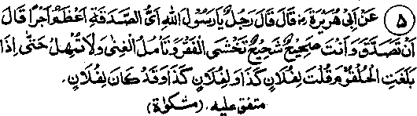
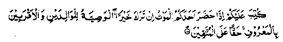

Chapter One · Section (b): Ahadith on the virtues of spending for the cause of Allah
3. Giving Sadaqah when one is healthy

Hadith 5
Someone asked Rasulullah Sallallaho alaihe wasallam as to what kind of Sadaqah was most rewardable? Rasulullah Sallallaho alaihe wasallam replied, "When at the time of giving Sadaqah you are in good health, you have greed for wealth, you fear to become poor and have a keen desire to become rich. That is the opportunity; do not postpone it till the last moment of your life and then say, ‘So much to so and so, and so much to that (Masjid) and that much to such and such (Madrassah), although actually now the property belongs to so and so (heirs). (Mishkaat)
Note: The fact is that the heir now has a rightful share in the property; the last will is applicable to at most one third of the property, therefore the dying person can only give as Sadaqah one third of his property. Another Hadith says that Rasulullah Sallallaho alaihe wasallam has said, "Man keeps saying ‘my property, my property’; in fact his property is confined to three things only; that which he has eaten, which he has worn and which he has given as Sadaqah and deposited in Allah’s Treasury; whatever is left over, he is leaving for other people." Another Hadith says, "It is better for a man to give one Dirham as Sadaqah early in his life-time than to give a hundred Dirhams at the time of his death". The reason is that anything given away on the death-bed amounts to giving from someone else’s property, because the dying man has to leave everything behind. Another Hadith quotes the saying of Rasulullah Sallallaho alaihe wasallam that anyone who gives Sadaqah, at the time of death, is like a man who, after satisfying his appetite, gives the remaining food as a present to someone. (Mishkaat). Rasulullah Sallallaho alaihe wasallam has repeatedly declared that the proper time for giving Sadaqah is when one is healthy and fit; that is the time to control one’s personal desires. This does not mean that Sadaqah at the time of death has no value. It does carry a reward and becomes an investment for the Akhirah, but it does not carry the same return as that for giving Sadaqah in spite of one’s needs and requirements. Allah Jalla Shanohu has said:........

It is prescribed for you that when one of you approaches death and leaves property, he should make a will, in a known manner, in favour of his parents and other relatives. All those who fear Allah will do this as their bounden duty. (al-Baqarah: 180)
This Divine order was given in the early days of Islam. Later, when the detailed orders regarding inheritance were revealed, the earlier order, for making will for those relatives whose rights had been fixed in ‘Shariah’, was cancelled; nevertheless the order for making a will upto one third of the property applied to all relatives who did not come under the Inheritance order. Ibne Abbas Radhi-allaho anho has said that, under the new order, the making of a will in favour of those who have been given a right of inheritance, has been cancelled while those who do not come under this order still enjoy the benefit of a will. Qatadah Rahmatullah alaihe says that, for those who are not entitled to become inheritors, the above Ayat regarding a will remains valid whether they be the relatives or strangers.
Another Hadith says that Allah Ta'ala says, "O son of Adam: You were a miser in life and extravagant at the time of death; do not heap two evils together: one, the miserliness when living and second the extravagance when about to die. Think of your relatives who are deprived of your heritage, include them in your will''. (Kanz). There is a hint towards this in the Ayat No. 2, among the Ayaat above, that it is better to give Sadaqah at the time when the love of wealth is uppermost in one’s mind compared to the time when the mind is indifferent. One Hadith says that Allah Jalla Shanohu is displeased with the person who remains miserly in his lifetime and becomes generous at the time of his death.
Therefore, it is not desirable that people should postpone giving Sadaqah and endowments to a later time near their death. In the first instance, no one ever knows when that last moment is to come, how and where. Several instances have come to notice where people were highly desirous of leaving much for charity and endowments, but illness did not give them a respite to do so. Some were victims of paralysis, some of a coma and some were adversely influenced by the heirs nursing them. Even if they got a chance of fulfilling their desire, which was rare, the reward for it would not be as much as it might have been, if they had given Sadaqah in defiance of their own mundane desires. However, if a person has not been able to give away Sadaqah in his life owing to negligence, he should take the opportunity of spending for the cause of Allah at the time of death. For, after death, few are remembered by their heirs, who mou them for a few days and then forget about them forever. These J common occurrence now-a-days. Therefore, whatever one wishes . take to the Akhirah, one had better carry it with oneself without delay.